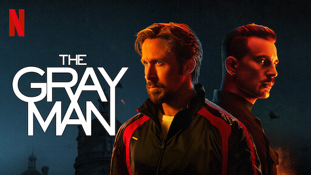

The Grey Man
The Gray Man es una película de suspenso y de acción estadounidense de 2022 dirigida por Anthony y Joe Russo basada en la novela de 2009 del mismo nombre de Mark Greaney.

The Gray Man es una película de suspenso y de acción estadounidense de 2022 dirigida por Anthony y Joe Russo basada en la novela de 2009 del mismo nombre de Mark Greaney.

The Batman es una película estadounidense de superhéroes dirigida por Matt Reeves y basada en el personaje homónimo creado por Bob Kane y Bill Finger para DC Comics.

Top Gun: Maverick es una película de acción y drama estadounidense de 2022 dirigida por Joseph Kosinski, secuela de la película de 1986 Top Gun. Se estrenó el 27 de mayo de 2022 en Estados Unidos.

Pinocho (en italiano Pinocchio) es un personaje de la literatura italiana y universal. Se trata de un muñeco de madera, protagonista del libro "Las aventuras de Pinocho".
Thor: Love and Thunder es una película de superhéroes basada en el personaje de Thor, de Marvel Comics, producida por Marvel Studios y distribuida por Walt Disney Studios Motion Pictures.

Breaking Bad es una serie de televisión dramática estadounidense creada y producida por Vince Gilligan. Narra la historia de Walter White (Bryan Cranston), un profesor de química con problemas económicos a quien le diagnostican un cáncer de pulmón inoperable

La casa del dragón es una serie dirigida por Clare Kilner, Geeta Patel, Miguel Sapochnik y Greg Yaitanes. El guion ha sido escrito por Ryan Condal, George R. R. Martin y Miguel Sapochnik. Se estrenó el 21 de agosto de 2022.

Los simuladores es una serie de televisión argentina, creada y dirigida por Damian Szifron y protagonizada por Federico D'Elía, Alejandro Fiore, Diego Peretti y Martín Seefeld. Producida y emitida por Telefe, la serie estrenó su primera temporada durante 2002, y la segunda en 2003, finalizando durante los primeros días de 2004

Peaky Blinders es una serie de televisión inglesa de drama histórico, emitida por el canal BBC Two. La serie está protagonizada por Cillian Murphy y se centra en una familia de gánsteres de Birmingham, durante los años veinte y del ascenso de su jefe, Thomas Shelby.
Stranger Things es una serie de televisión web estadounidense de suspenso y ciencia ficción coproducida y distribuida por Netflix.4 Escrita y dirigida por los hermanos Matt y Ross Duffer, y producida ejecutivamente por Shawn Levy,5 se estrenó en la plataforma Netflix el 15 de julio de 2016

Blade Runner 2049 es una película neo-noir y de ciencia ficción estadounidense dirigida por Denis Villeneuve, estrenada en 2017 y escrita por Hampton Fancher y Michael Green.
Bad Boys for Life (también conocida como Bad Boys III, y Bad Boys para siempre) es una película estadounidense de comedia y acción de estilo buddy cop dirigida por Adil El Arbi y Bilall Fallah
Trolls World Tour (titulada Trolls 2: World Tour en Hispanoamérica y Trolls 2: Gira mundial en España) es una película de comedia musical americana animada por computadora de 2020 producida por DreamWorks Animation y distribuida por Universal Pictures.

Project Power es una película de superhéroes estadounidense de 2020 dirigida por Henry Joost y Ariel Schulman, producida por Eric Newman y Bryan Unkeless y escrita por Mattson Tomlin.
Aves de presa (en inglés: Birds of Prey: And the Fantabulous Emancipation of One Harley Quinn, o simplemente Birds of Prey) es una Película de DC protagonizada por Margot Robbie, Jurnee Smollett-Bell, Mary Elizabeth Winstead, Rosie Perez, Ella Jay Basco y Ewan McGregor